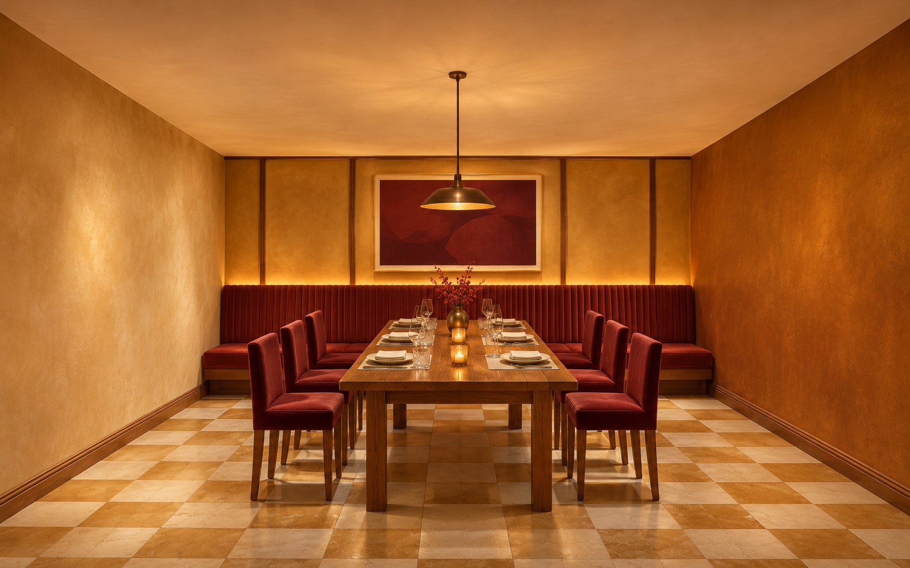
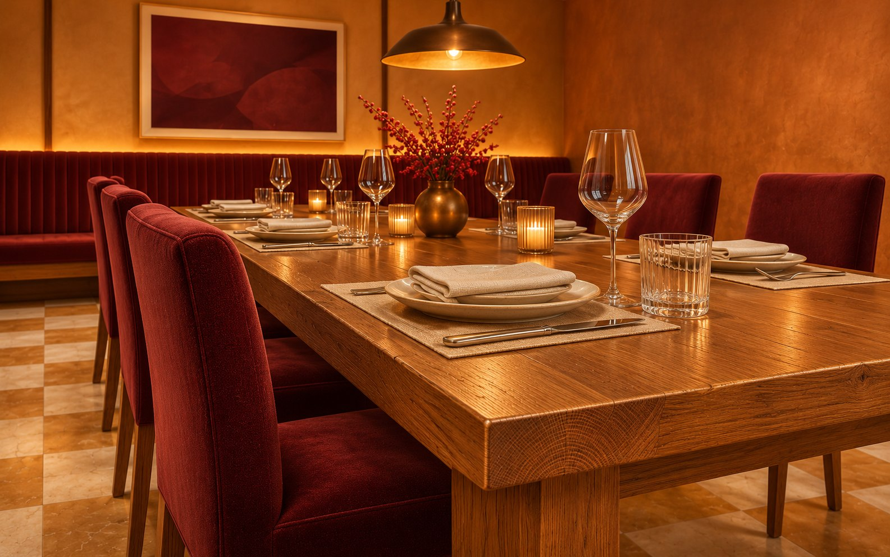
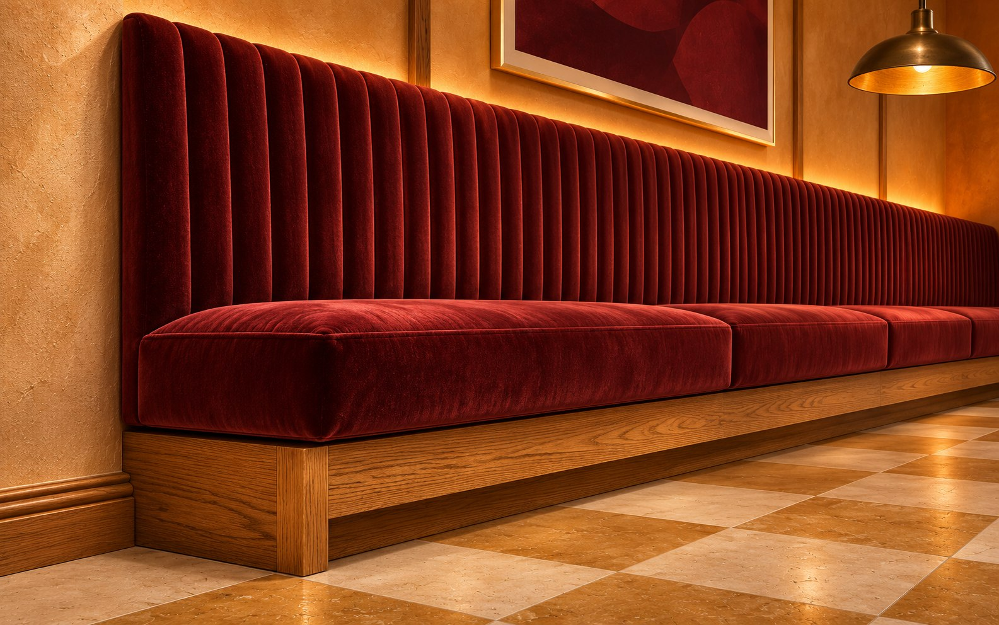

Гранатовая ткань
Износостойкая обивка с возможностью замены секций.
Большая компания в центре, камерные ниши по краям. Тёплый свет и длинная скамья вместо набора этнических декораций.
Как устроен вечер в зале
Визуализации сгенерированы ИИ для концепта; это не фотографии реализованного объекта.


Понятный вход, место ожидания, затем — выбор масштаба компании.
Короткий служебный маршрут. Возврат посуды — через отдельный узел.
В центре — длинный стол. По краю — мягкие ниши. Центральный проход остаётся свободным от выдвинутых стульев.
Пример — концепт для портфолио. Площадь 180 м² условная. Технологию кухни, эвакуацию и доступность проверяют профильные проектировщики.
Мягкое основание и звукопоглощающие панели. Свет ниже потолка делает большой зал соразмерным человеку.
Износостойкая обивка с возможностью замены секций.
Стол и стеновые панели. Тон уточняется на образце.
Матовый фон, без контрастного орнамента.
За рейками — акустическое заполнение. Под столами — мягкие опоры. Текстиль и потолочные элементы подбираются после акустического расчёта.
Пример — концепт для портфолио. Расчёт на 180 м², без оборудования кухни, ремонта и инженерных разделов.
| Раздел | ₽/м² | Сумма |
|---|---|---|
| Зонирование и посадка | 700 | 126 000 ₽ |
| Концепция и материалы | 900 | 162 000 ₽ |
| Чертежи интерьера | 1 400 | 252 000 ₽ |
| Ведомости | 500 | 90 000 ₽ |
| Итого | 3 500 | 630 000 ₽ |
Визуализация — от 30 000 ₽, отдельно. Технологический проект кухни рассчитывается дополнительно.